Country evidence
National surveys with their own AI questions, from central banks, statistical offices and research institutes. They cover one country each, so they are not plotted on the overview.
Germany
ifo Business Survey · ifo Institute · May 2026 · Firms, about 9,000. Asks whether AI is in use, planned, under discussion, or not an issue.
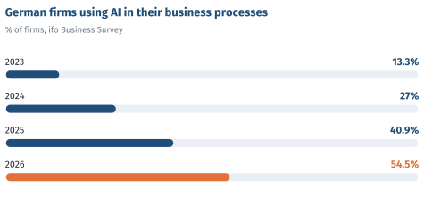
Bundesbank Online Panel Firms · Deutsche Bundesbank, Monthly Report March 2026, box “Generative AI in German enterprises: adoption, costs and expected economic impact” (pp. 109-110) · April to June 2025 · Firms, more than 7,000. “Has your enterprise already used generative artificial intelligence (AI) or is it planning to use it in future?”, asked for 2024, 2025 and 2026.
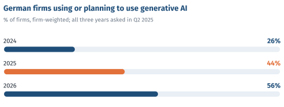
IAB Establishment Panel · Institute for Employment Research · July to November 2025 · Firms, about 15,000 establishments of all sizes. Asks whether the establishment uses generative AI, and since when.
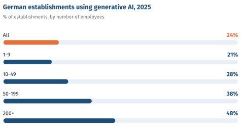
DiWaBe 2.0 · BAuA, ZEW, IAB and BIBB · July to December 2024 · Workers, 9,835 employees aged 16 to 65. “How often do you work with AI-supported computer programs?”
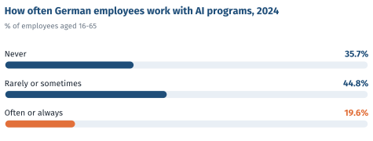
France
Monthly business survey, AI module · Banque de France · 25 February to 3 April 2026 · Firms, about 7,000; results for those with 20+ employees. Asks what use the firm makes of generative and non-generative AI: intensive, limited, experimental, planned, or none.
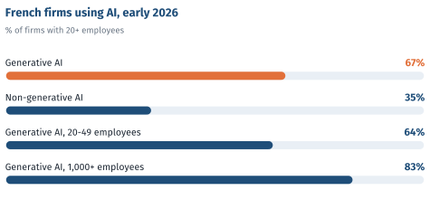
Italy
Survey of Industrial and Service Firms · Banca d’Italia · 17 February to 12 May 2026 · Firms, about 4,000 with 20+ employees. Asks what use the firm makes of predictive and generative AI: extensive, limited, experimental, planned, or none.
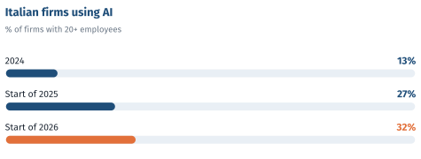
Spain
Business Activity Survey (EBAE) · Banco de España · 11 to 25 November 2024 · Firms, about 6,300 of all sizes. Asks how much the firm uses predictive and generative AI: none, planned, sporadic or pilot, moderate, or high.
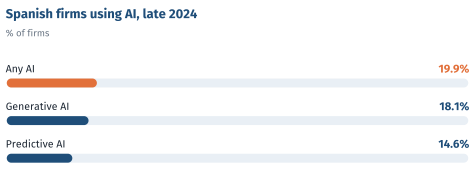
Austria
AI use and attitudes · Statistics Austria · April to July 2025 · Individuals, 5,550 people aged 16 to 74. Asks whether people have used AI tools to generate text, images or other content, and how often in the last three months.
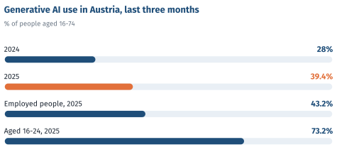
Netherlands
Belevingen 2025, AI module · Statistics Netherlands (CBS) · 23 January to 30 June 2025 · Individuals, 3,834 adults aged 18+; the work question goes to those in paid work. “Gebruikt u op dit moment kunstmatige intelligentie voor uw werk?” (Do you currently use artificial intelligence for your work?)
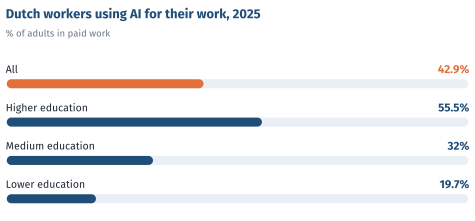
Employers’ Survey on Work (WEA) 2024 · TNO · 15 January to 29 May 2024 · Firms, 3,460 establishments with 5+ employees. Asks which technologies the establishment uses, including “algorithms, artificial intelligence (AI) or big data techniques to improve processes, products or services”.
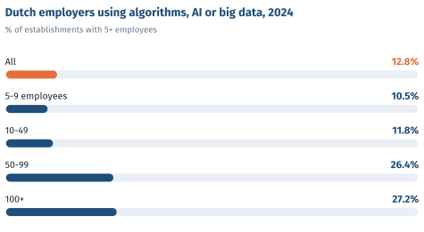
Denmark
AI chatbot adoption surveys · Humlum and Vestergaard, fielded by Statistics Denmark · November to December 2024 (first wave late 2023) · Workers, 25,241 in 11 AI-exposed occupations covering about a fifth of Danish employment. “Har du benyttet følgende AI chatbots?” (Have you used the following AI chatbots?), with answers for work and for leisure.
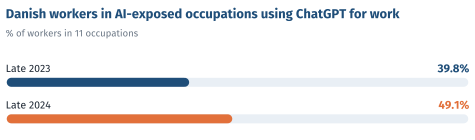
Finland
Generative AI module, EVA values and attitudes survey · ETLA · 8 to 21 October 2024 · Individuals, 2,018 people aged 18 to 79. Asks how often people used an AI web application in the last 12 months, and whether they have used AI for a task in their job.
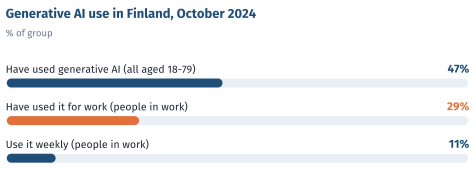
Working Life Barometer 2025 · Ministry of Economic Affairs and Employment, data collected by Statistics Finland · autumn 2025 · Workers, wage earners aged 18 to 64. Asks whether AI technology is used at the respondent’s workplace, and with what effects.
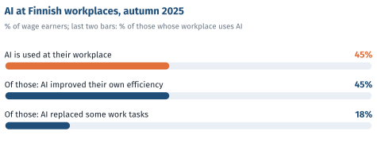
Poland
NBP Quick Monitoring Survey · Narodowy Bank Polski · quarterly; AI questions in the reports for Q4 2024 and Q2 2026 · Firms, non-financial enterprises of all sizes. Asks whether the firm uses AI tools or plans to. Figures are taken from press reports of the survey, not from the NBP publication itself.
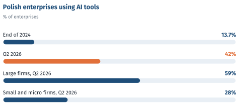